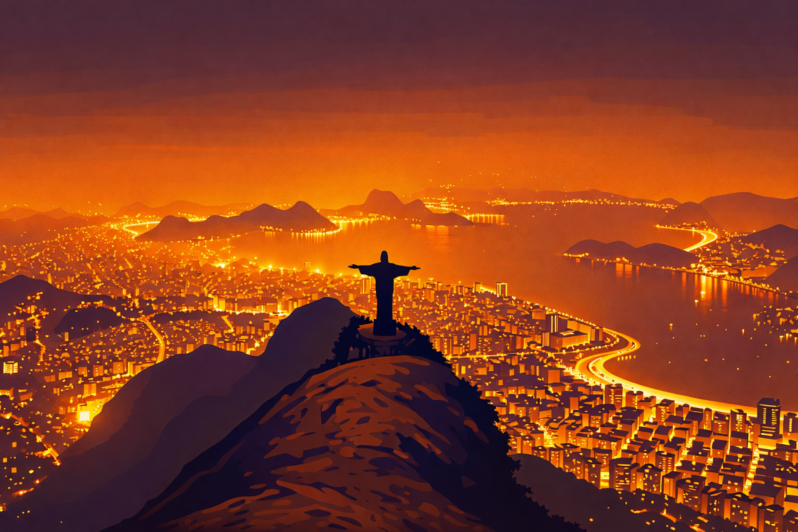
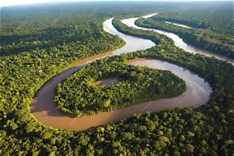
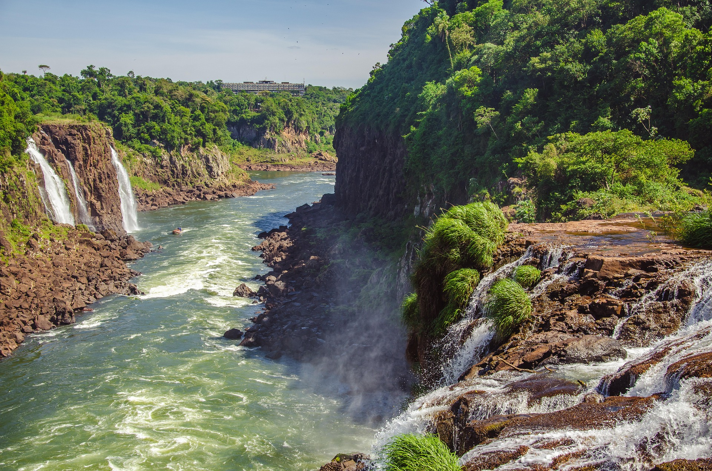

Playas tropicales
Brasil cuenta con una extensa costa atlántica donde se encuentran playas de diferentes características. Algunas son ideales para descansar y otras permiten practicar surf, natación y otros deportes acuáticos.
Descubre paisajes extraordinarios y destinos que parecen de otro mundo.
Brasil es uno de los destinos turísticos más variados del planeta. Su enorme territorio ofrece playas de arena clara, bosques tropicales, montañas, ríos, cascadas y ciudades llenas de historia.
El turismo es una actividad importante para su economía, ya que atrae visitantes interesados en conocer sus paisajes naturales, su cultura, su arquitectura y sus celebraciones. Cada región ofrece experiencias diferentes, por lo que es posible encontrar opciones para quienes disfrutan de la aventura, el descanso o las actividades culturales.

Río de Janeiro es una de las ciudades más conocidas del país.Es una de las ciudades más famosas de Brasil. Destaca por sus playas de Copacabana e Ipanema, el cerro Pan de Azúcar y el Cristo Redentor, una enorme escultura situada en la cima del cerro del Corcovado. También es conocida por sus paisajes entre el mar y las montañas, su ambiente cultural y su carnaval.
Es la capital del país y destaca por su arquitectura moderna y su planificación urbana. Fue inaugurada en 1960 y cuenta con edificios emblemáticos como la Catedral Metropolitana y el Congreso Nacional. Su conjunto arquitectónico moderno es reconocido como Patrimonio Mundial por la UNESCO.
Es una ciudad con una gran riqueza histórica y cultural. Su centro histórico, conocido como Pelourinho, tiene calles empedradas, edificios coloridos, iglesias antiguas y espacios donde se conservan importantes tradiciones afrobrasileñas.
Ubicada en el corazón de la Amazonía, Manaos es una ciudad importante del norte brasileño. Es conocida por el Teatro Amazonas y por ser uno de los principales puntos de acceso a experiencias turísticas relacionadas con la selva y los ríos de la región.

La Amazonía es una de las regiones naturales más importantes del mundo. Brasil contiene una gran parte de esta extensa selva tropical, caracterizada por su extraordinaria biodiversidad, sus ríos y una enorme variedad de especies de plantas y animales.
El río Amazonas es uno de los sistemas fluviales más importantes del planeta. En esta región se pueden conocer comunidades tradicionales, observar paisajes naturales y aprender sobre la importancia de conservar los ecosistemas.

Las cataratas del Iguazú forman uno de los conjuntos de cascadas más impresionantes del mundo.Brasil cuenta con una extensa costa atlántica donde se encuentran playas de diferentes características. Algunas son ideales para descansar y otras permiten practicar surf, natación y otros deportes acuáticos.
Las actividades de ecoturismo permiten conocer la naturaleza de manera responsable mediante caminatas, observación de animales, recorridos por reservas naturales y visitas guiadas.
Las grandes ciudades ofrecen museos, mercados, monumentos, centros históricos, restaurantes, espacios culturales y una gran variedad de actividades para sus visitantes.
La moneda oficial es el real brasileño. Es recomendable consultar el tipo de cambio antes de viajar y considerar gastos de transporte, alimentación y hospedaje.
El portugués es el idioma oficial. Aprender expresiones básicas como saludos y preguntas comunes puede facilitar la comunicación.
Gran parte del país tiene clima tropical, aunque existen diferencias entre regiones. Es conveniente revisar el pronóstico del destino antes de viajar.
Los gastos cambian dependiendo de la ciudad, la temporada y el estilo de viaje. Las grandes ciudades y los destinos turísticos populares pueden requerir un presupuesto mayor.